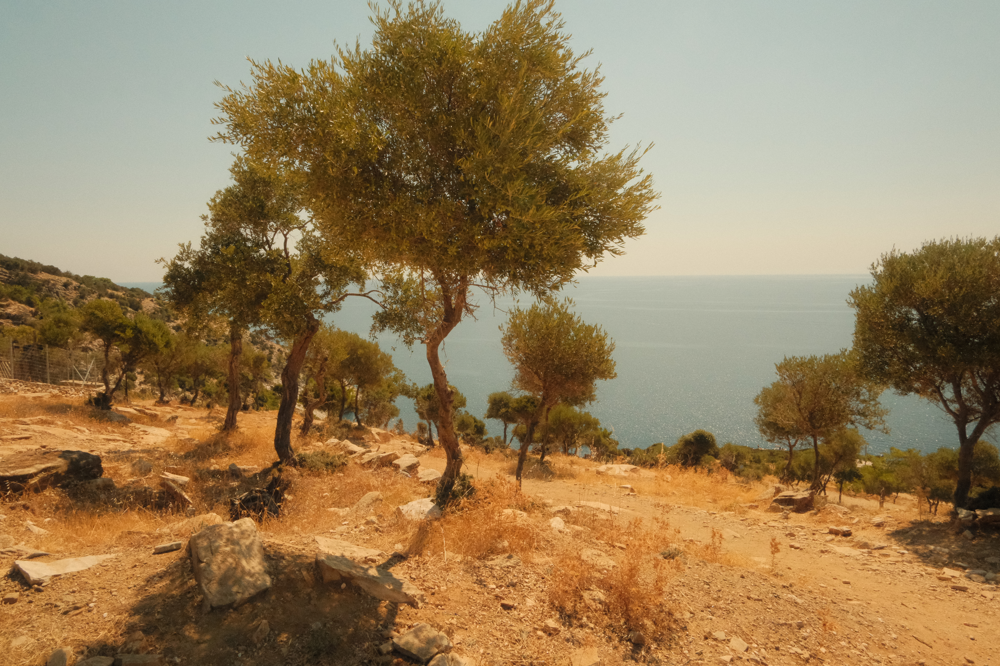

PLACE / DRAFT
Териберка
Северная природа, край земли и полярный день с лучшими друзьями.

се началось с шашлыка, отдыхали, веселились, пили пиво. Как закончили убрались и пошли переодеваться, так как впереди предстояло очень долго гулять по северным просторам. Вышли сначала к берегу, солнце было ярко поднято и освещало воду. Провели около часа на берегу бегая по песку и направились на главную локацию, водопад. Путь вообще занимает 2 часа без остановок, но у нас занял 4, потому что сначала мы познакомились с рыбаком поболтали с ним, потом прыгали по сопкам и фотографировались, выпила много, говорили тосты, Демьян напился и мы замедляли шаг, чтобы он догонял. Уже на подходе увидели водоем или озеро, вода в котором стекает с сопок сверху, вода была кристально чистая и не такая холодная, как мы думали. Искупались и через 15 минут были уже на водопаде. Как мы туда пришли мы почти сразу спустились вниз с Денисом, Деном, Славой и Игорем. Дема остался сверху. Мы подошли прям к краю, куда вода уходит уже в Баренцево море. Это был как обрыв среди скал и мы посмотрели наверх и увидели невероятную красоту и решили взобраться по этим камнями. Около 300 метров мы пьяные ползли, серьезно рискуя жизнь, так как было очень круто и сколько, но мы все таки поднялись на самый вверх на смотровую площадку. Время было 4 часа утра и очень светло, как будто середина дня. Солнце все это время сопровождало нас и опустилось, только тогда, когда мы возвращались домой. Очень уставшие нам предстоял путь домой, но на этот раз почти без остановок. В часов 7-8 утра мы пришли и легли спать. Проснулся я где то в 15-16 и у нас были продукты, голодные были все. Я разбудил Демьяна, потому что он шеф повар со звездой мишлен и мы начали готовить пасту болоньезе вместе. Постоянно выбивало пробки, перегревалась розетка, мы готовили около 3 часов, но и объемы у нас были большие. 2кг фарша и 2кг пасты. Мы приготовили и как раз все пацаны покушали, ели сначала мы. Слава, Демьян и Я, потом уже пацаны остальные. Самое кайфовое у нас было белое сухое вино и оно отлично вписалось в эту пасту болоньезе